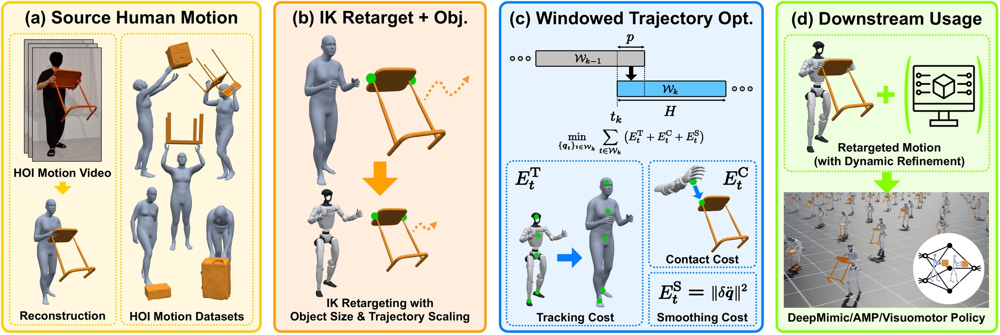

A contact-centric method that transfers human–object interaction to humanoid embodiments while explicitly preserving the location and timing of object contacts.
Jihwan Shin · Adrià López Escoriza · Junzhe He · Matthias Heyrman · Marco Hutter
Robotic Systems Lab, ETH Zürich
Learning from demonstration (LfD) has enabled humanoid robots to acquire diverse whole-body skills, but extending this paradigm to human-object interaction (HOI) is limited by the availability of robot-compatible interaction references. We present HOI-Retarget, a contact-centric retargeting method that transfers HOI onto a humanoid robot for large-scale motion-data generation. Its windowed trajectory optimization uses every labeled contact as a target in the object frame, balancing body tracking, foot support and smoothness under the robot's kinematic limits. The method can augment a single demonstration across object sizes, absorb contacts reconstructed from monocular video, and extend to several robots manipulating one object. We publicly release the code and the retargeted motion dataset.
Method

Results
OMOMO retargets on the Unitree G1 and H2, one camera distance across all three panels.
All three panels share one camera distance, so the heights are directly comparable: the H2 stands about as tall as the human, the G1 well short of both.
Source dataset & robots: OMOMO (Li et al., 2023)·Unitree G1·Unitree H2
Generality
Four more HOI datasets, and two-person demonstrations retargeted against the shared object trajectory.
Three single-actor clips from public HOI datasets, plus two collaborative sequences in which a pair of robots share one object. Four datasets join OMOMO in the released corpus — ParaHome, NeuralDome, CoRoleHOI and IMHD2; the HUMOTO clip is shown as a retargeting result but is not part of the release.
Source datasets: IMHD2 (Zhao et al., 2024)·NeuralDome (Zhang et al., 2023)·HUMOTO (Lu et al., 2025)·CoRoleHOI (Zuo, 2026)·ParaHome (Kim et al., 2024)
Comparison
Interaction-aware retargeting keeps the overall body–object geometry but does not minimize the error to each source contact; GMR is an object-agnostic control. Mesh scaling is off here, so every method manipulates the same object.
OmniRetarget preserves the broad body–object arrangement, whereas HOI-Retarget places the palms at the labeled source regions on the object.
Baselines & data: OmniRetarget (Yang et al., 2026)·GMR (Araujo et al., 2026)·OMOMO (Li et al., 2023)
Data generation
One captured motion becomes many. The contact targets live in the object frame, so resizing the object carries them with its surface and the clip re-solves at any size without re-annotating the interaction.
One source clip at five object scales, from a quarter to one-and-a-half times true size, on both robots. The grasp re-anchors to the new surface at every scale.
Source dataset & robots: OMOMO (Li et al., 2023)·Unitree G1·Unitree H2
In the wild
A table in none of the datasets above, recorded on a single camera and reconstructed by CARI4D. Noisy per-frame contacts are collapsed to one point per sticking segment and corrected before the same optimization runs.
A hand-held capture of a person moving a table the method has never seen, reconstructed into an SMPL-X body and a 6-DoF object track, retargeted with the contact-correction tool, then refined into a dynamically feasible trajectory. The subject's face is blurred throughout.
Reconstruction: CARI4D (Xie et al., 2026)·Unitree G1
Downstream
A kinematic retarget is not yet physically feasible. Two refiners of different families — a per-clip RL tracker and MuJoCo-based SBTO — start from OmniRetarget's references and from ours, on the same budget.
The kinematic retarget is a reference, not a controller. Both refiners start from the left panel; each produces a dynamically feasible trajectory usable for reference-state initialization downstream.
Refiner & data: DynaRetarget (Dhedin et al., 2026)·OMOMO (Li et al., 2023)
Release
Kinematic humanoid interaction references from five source datasets, retargeted to two humanoid platforms, including synchronized two-robot collaboration.
Replace the note with the arXiv identifier once the preprint is up.
@article{shin2026hoiretarget,
title = {HOI-Retarget: Contact-Centric Retargeting for Human-Object Interaction},
author = {Shin, Jihwan and L\'opez Escoriza, Adri\`a and He, Junzhe and
Heyrman, Matthias and Hutter, Marco},
year = {2026},
note = {Manuscript under review}
}